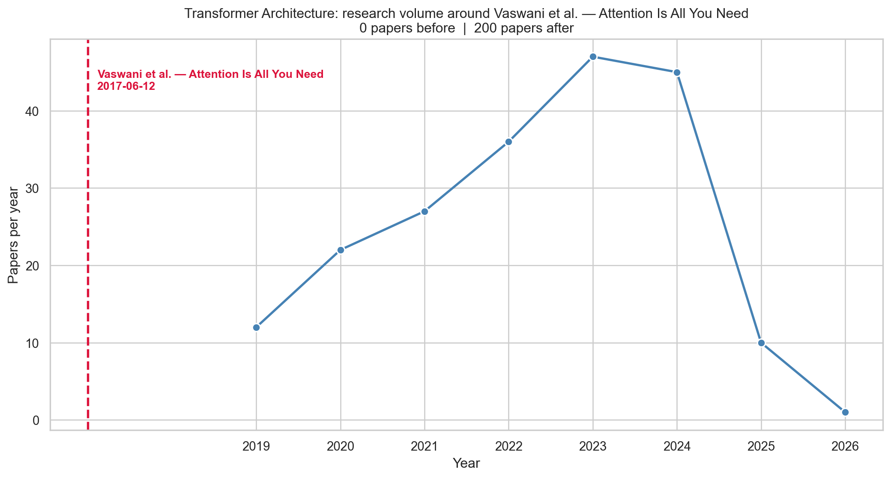
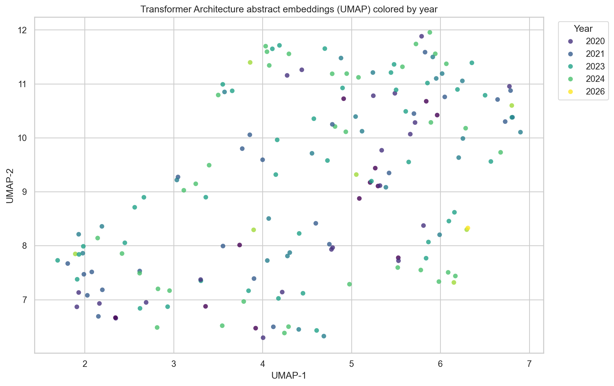

import ml_research_trendsGetting Started
The purpose of the ml_research_trends python package is to gather data, clean, and analyze machine learning topics and how they have changed over time. Research papers are taken from SemanticScholar using their API.
Requirements
To use the ml_research_trends package you must have each of the following:
- Python >= 3.11
- Semantic Scholar API key (stored in a
.envfile) python-dotenvpackage for loading environment variables
Installation
pip install ml-research-trendsOr with uv:
uv add ml-research-trendsImporting
To import the entire package:
To import individual functions:
from ml_research_trends import (
collect_topic_data,
summarize_topic_data,
analyze_topic_trends,
plot_topic_counts_by_year,
embed_and_plot_abstracts,
plot_landmark_timeline
)Setting up API Key
To load your API key from a .env file, use the python-dotenv package:
from dotenv import load_dotenv
import os
# Load environment variables from .env file
load_dotenv()
# Get the API key
SEMANTIC_SCHOLAR_API_KEY = os.getenv('SEMANTIC_SCHOLAR_API_KEY')Make sure your .env file contains:
SEMANTIC_SCHOLAR_API_KEY=your_api_key_hereUsing the ml_research_trends package
Step 1: Gather Data
First you need to create your dataset using the SemanticScholar API. You can do this using the collect_topic_data function.
This queries Semantic Scholar for each keyword, de-duplicates the results, filters by year, and returns a tidy pandas.DataFrame. It also writes the DataFrame to CSV if save_path is given.
df = collect_topic_data(
keywords=[
"self-attention neural network",
"multi-head attention",
"transformer language model",
"encoder decoder transformer",
],
max_results_per_keyword=50,
min_year=2016,
max_year=2026,
api_key=SEMANTIC_SCHOLAR_API_KEY
)
print(df[["title", "year", "citation_count", "venue"]].head())
print("Total papers:", len(df))Fetching papers: 0%| | 0/4 [00:00<?, ?req/s]Fetching papers: 0%| | 0/4 [00:00<?, ?req/s, keyword=self-attention neural network]Fetching papers: 25%|██▌ | 1/4 [00:01<00:03, 1.15s/req, keyword=self-attention neural network]Fetching papers: 25%|██▌ | 1/4 [00:01<00:03, 1.15s/req, collected=0, keyword=self-attention neural network]Fetching papers: 25%|██▌ | 1/4 [00:01<00:03, 1.15s/req, keyword=multi-head attention] Fetching papers: 25%|██▌ | 1/4 [00:01<00:03, 1.15s/req, keyword=multi-head attention]Rate limited (429). Waiting 1s before retry...Fetching papers: 50%|█████ | 2/4 [00:03<00:03, 1.77s/req, keyword=multi-head attention]Fetching papers: 50%|█████ | 2/4 [00:03<00:03, 1.77s/req, collected=50, keyword=multi-head attention]Fetching papers: 50%|█████ | 2/4 [00:03<00:03, 1.77s/req, keyword=transformer language model] Fetching papers: 75%|███████▌ | 3/4 [00:04<00:01, 1.52s/req, keyword=transformer language model]Fetching papers: 75%|███████▌ | 3/4 [00:04<00:01, 1.52s/req, collected=100, keyword=transformer language model]Fetching papers: 75%|███████▌ | 3/4 [00:04<00:01, 1.52s/req, keyword=encoder decoder transformer] Fetching papers: 100%|██████████| 4/4 [00:05<00:00, 1.33s/req, keyword=encoder decoder transformer]Fetching papers: 100%|██████████| 4/4 [00:05<00:00, 1.33s/req, collected=150, keyword=encoder decoder transformer]Fetching papers: 100%|██████████| 4/4 [00:05<00:00, 1.40s/req, collected=150, keyword=encoder decoder transformer] title year citation_count \
0 Self-attention neural network for solving corr... 2025 17
1 Three-dimensional DenseNet self-attention neur... 2022 81
2 Solving the fractional quantum Hall problem wi... 2024 27
3 Crystallographic phase identifier of a convolu... 2024 8
4 A new deep self-attention neural network for G... 2023 19
venue
0 Physical review B
1 NaN
2 Physical review B
3 IUCrJ
4 GPS Solutions
Total papers: 200Step 2: Summarize and analyze
summary = summarize_topic_data(df)
print("Total papers:", summary["total_papers"])
print("Year range:", summary["year_min"], "-", summary["year_max"])
print("Median citations:", summary["median_citations"])
trends = analyze_topic_trends(df)
print(trends)Total papers: 200
Year range: 2019 - 2026
Median citations: 43.0
year paper_count average_citations median_citations
0 2019 12 251.166667 159.5
1 2020 22 724.500000 134.5
2 2021 27 1564.037037 65.0
3 2022 36 312.222222 52.0
4 2023 47 74.425532 38.0
5 2024 45 51.000000 24.0
6 2025 10 15.300000 13.5
7 2026 1 166.000000 166.0Step 3: Make plots
Year counts
plot_topic_counts_by_year(
trends,
topic_name="Transformer Architecture"
)
None
Landmark Timeline
plot_landmark_timeline(
df,
landmark_date="2017-06-12",
landmark_label="Vaswani et al. — Attention Is All You Need",
topic_name="Transformer Architecture",
)
None
Embedding Abstracts
Note: Embedding the first time will download the model (~8 GB) and cache the vectors to cache_path. After that, rerunning is fast.
embed_and_plot_abstracts(
df,
model_name_or_path="Qwen/Qwen3-Embedding-4B",
reducer="umap",
cache_path="cache/tutorial_embeddings.npy",
topic_name="Transformer Architecture"
)
NoneWarning: You are sending unauthenticated requests to the HF Hub. Please set a HF_TOKEN to enable higher rate limits and faster downloads.Loading Qwen/Qwen3-Embedding-4B on cpu...Loading weights: 0%| | 0/398 [00:00<?, ?it/s]Loading weights: 100%|██████████| 398/398 [00:00<00:00, 24359.51it/s]
Batches: 0%| | 0/22 [00:00<?, ?it/s]Batches: 5%|▍ | 1/22 [19:40<6:53:02, 1180.13s/it]Batches: 9%|▉ | 2/22 [31:40<5:03:11, 909.56s/it] Batches: 14%|█▎ | 3/22 [41:05<3:58:10, 752.14s/it]Batches: 18%|█▊ | 4/22 [50:32<3:23:45, 679.19s/it]Batches: 23%|██▎ | 5/22 [59:54<3:00:28, 636.99s/it]Batches: 27%|██▋ | 6/22 [1:07:29<2:33:20, 575.04s/it]Batches: 32%|███▏ | 7/22 [1:16:27<2:20:44, 562.99s/it]Batches: 36%|███▋ | 8/22 [1:24:01<2:03:16, 528.31s/it]Batches: 41%|████ | 9/22 [1:31:04<1:47:21, 495.47s/it]Batches: 45%|████▌ | 10/22 [1:38:57<1:37:39, 488.31s/it]Batches: 50%|█████ | 11/22 [1:46:06<1:26:11, 470.17s/it]Batches: 55%|█████▍ | 12/22 [1:52:11<1:13:02, 438.27s/it]Batches: 59%|█████▉ | 13/22 [1:57:47<1:01:06, 407.39s/it]Batches: 64%|██████▎ | 14/22 [2:03:47<52:23, 392.88s/it] Batches: 68%|██████▊ | 15/22 [2:09:11<43:25, 372.26s/it]Batches: 73%|███████▎ | 16/22 [2:13:46<34:17, 342.97s/it]Batches: 77%|███████▋ | 17/22 [2:18:19<26:49, 321.89s/it]Batches: 82%|████████▏ | 18/22 [2:24:03<21:54, 328.62s/it]Batches: 86%|████████▋ | 19/22 [2:28:51<15:49, 316.35s/it]Batches: 91%|█████████ | 20/22 [2:33:02<09:53, 296.75s/it]Batches: 95%|█████████▌| 21/22 [2:37:11<04:42, 282.38s/it]Batches: 100%|██████████| 22/22 [2:38:23<00:00, 219.34s/it]Batches: 100%|██████████| 22/22 [2:38:23<00:00, 431.99s/it]Saved embeddings to cache/tutorial_embeddings.npy